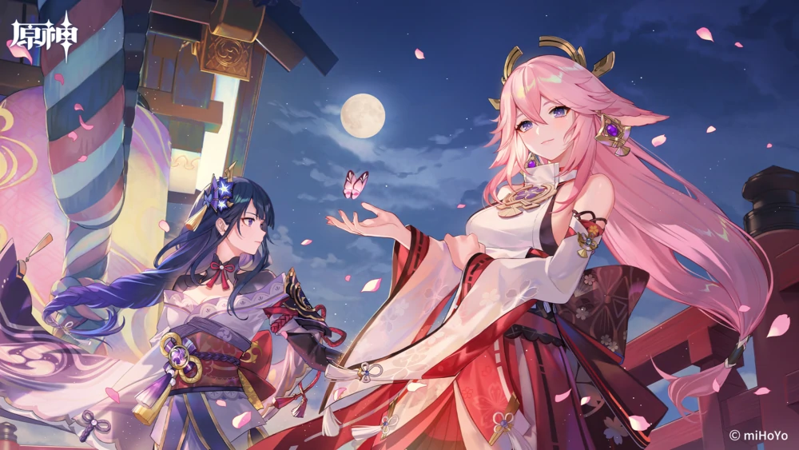

About Raiden Shogun
The Raiden Shogun (Japanese: 雷らい電でん将しょう軍ぐん Raiden Shougun) is a playable Electro character in Genshin Impact. The Raiden Shogun is comprised of two beings in one body: Ei, the current Electro Archon of Inazuma; and the Shogun, the puppet created by Ei to act as the ruler of Inazuma in her stead.
Raiden Shogun's characteristics
- She is logical and loyal by nature
- Trustworthy and steady
- Has an unmatched sense of duty and she follows through on her plans

This is Raiden Shogun's Friend
This is Raiden Shogun in action